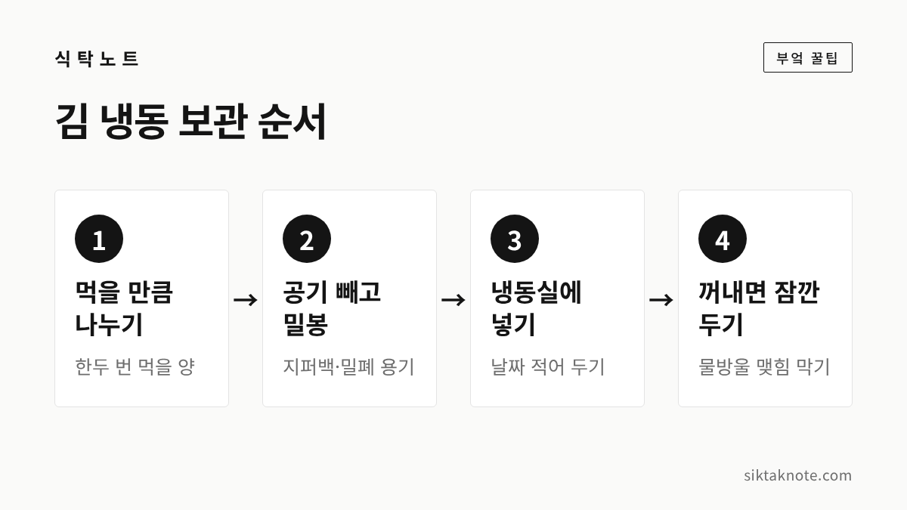

김 보관법 — 눅눅해지지 않게 바삭하게, 냉동 보관과 되살리는 법

3줄 요약
- 김은 공기를 빼고 밀봉해서 냉동실에 두는 게 가장 좋습니다.
- 냉동실에서 꺼내면 봉지를 바로 열지 말고 잠깐 기다렸다 여세요.
- 이미 눅눅해진 김은 약한 불의 팬이나 전자레인지로 바삭함을 되살릴 수 있습니다.

김은 사 올 때만 해도 바삭한데요. 봉지를 한 번 뜯고 나면 며칠 만에 눅눅해지고, 조미김은 기름 쩐내까지 올라오기 쉽습니다. 김을 오래 맛있게 두려면 딱 두 가지, 습기와 공기를 막아 주면 됩니다.
김이 눅눅해지는 이유
김은 아주 얇고 바싹 마른 식품이라 공기 중의 습기를 금방 빨아들여요. 봉지를 열어 둔 채 식탁에 놓아두면 몇 시간 만에 손에 착 감기듯 눅눅해지는 것도 그래서입니다. 장마철이나 국 끓이는 부엌처럼 습한 곳이라면 더 빠르죠.
조미김은 한 가지가 더 있어요. 기름을 발라 구운 김이라, 공기에 닿으면 그 기름이 산패하면서 쩐내가 납니다. 바삭함만이 아니라 맛과 냄새까지 지키려면 공기를 막는 게 중요합니다.
조미김은 냉동실이 가장 안전합니다
경기도보건환경연구원이 조미김을 보관 방법별로 비교한 결과가 있는데요(2019년 서울신문 보도). 상온에서 투명 용기에 둔 조미김은 기름이 산패한 정도를 보여 주는 과산화물가가 처음 1.7meq/kg에서 8일 뒤 10.6, 20일 뒤 64.4meq/kg으로 크게 올랐다고 합니다. 냉동고에 둔 김은 8일 뒤 6.2, 20일 뒤 9.4meq/kg으로 큰 변화가 없었고요.
연구원은 먹다 남은 조미김은 밀폐 용기에 담아 냉동 보관하는 게 가장 안전하고, 상온에 둔다면 1주일 안에 먹는 게 좋다고 안내했습니다. 과산화물가가 높아지면 영양 가치가 줄고 눅눅한 냄새가 난다고 알려져 있어요.
냉장고보다 냉동실인 이유
김을 냉장고에 넣는 집도 많은데요. 냉장고 안은 온도는 낮아도 습도가 높은 편이라, 봉지가 조금만 열려 있어도 김이 오히려 눅눅해지기 쉽다고 합니다. 오래 둘 김은 냉동실에 넣으시는 게 낫습니다.
- 김을 한두 번 먹을 만큼씩 나눠요. 큰 봉지 하나에 몰아 두면 꺼낼 때마다 전부 습기를 맞습니다.
- 지퍼백이나 밀폐 용기에 담고 공기를 최대한 빼서 닫아요.
- 김 봉지에 들어 있던 습기 제거제가 있다면 같이 넣어 둡니다.
- 담은 날짜를 적어 냉동실에 넣으면 됩니다.
조미김 도시락김처럼 작은 봉지로 나뉜 김은 뜯지 않은 봉지째 지퍼백에 한 번 더 담아 얼리면 편해요. 명절 선물로 받은 김처럼 양이 많을 때도 마찬가지인데요. 당장 먹을 한두 봉지만 꺼내 두고 나머지는 처음부터 냉동실에 넣어 두시는 게 좋습니다. 상온에 두고 하나씩 꺼내 먹다 보면 마지막 봉지까지 가기 전에 맛이 떨어지기 쉽거든요.
꺼낼 때는 잠깐 기다렸다 엽니다
냉동실에서 꺼낸 차가운 봉지를 바로 열면, 따뜻한 공기 속 습기가 차가운 김에 닿아 물방울처럼 맺히기 쉬운데요. 그러면 애써 얼려 둔 김이 금방 눅눅해집니다. 봉지를 닫은 채로 잠깐 두어 김이 실온에 가까워진 뒤에 여는 게 좋습니다.
필요한 만큼만 꺼냈다면 나머지는 바로 공기를 빼고 다시 냉동실에 넣어 주세요. 식탁에 꺼내 둔 채로 밥을 다 먹고 정리하면 그 사이에 습기를 먹습니다.
마른김은 구워서 식힌 뒤 보관해요
조미하지 않은 마른김(생김)도 같은 원칙입니다. 습기를 막아 밀봉하고 냉동실에 두면 오래 가요. 마른김을 한꺼번에 구워 두었다면 반드시 완전히 식힌 다음 봉지에 넣으세요. 따뜻할 때 담으면 안에서 김이 서려 눅눅해지거든요. 습기 제거제를 함께 넣어 밀봉하면 바삭함이 더 오래갑니다.
이미 눅눅해진 김 되살리기
눅눅해졌다고 바로 버리실 필요는 없습니다. 쩐내 없이 눅눅하기만 한 김은 수분만 날려 주면 다시 바삭해져요.
- 팬: 기름 없이 약한 불로 팬을 데운 뒤, 김을 한 장씩 올려 앞뒤로 살짝씩 구워 줍니다. 센 불에 두면 금방 타니 눈을 떼지 마세요.
- 전자레인지: 접시에 키친타월을 깔고 김을 한 장씩 올려 10초 정도씩 짧게 돌려 봅니다. 한 번에 오래 돌리면 타거나 오그라들 수 있으니, 상태를 보며 조금씩 늘리세요.
되살린 김은 식으면서 더 바삭해집니다. 다 식은 뒤에 다시 밀봉해 두면 돼요.
이런 김은 먹지 않습니다
- 기름 쩐내나 퀴퀴한 냄새가 나는 조미김
- 하얗거나 푸르게 곰팡이가 핀 김
쩐내는 기름이 산패해서 나는 냄새라, 다시 굽는다고 사라지지 않습니다. 이런 김은 아깝더라도 버리시는 게 좋습니다.
자주 묻는 질문
김을 냉동하면 맛이 변하지 않나요?
밀봉만 잘 해 두면 냉동실에서 맛과 바삭함을 오래 지킬 수 있어요. 다만 꺼낼 때 바로 열지 말고 잠깐 기다리는 것만 지켜 주세요.
김에 들어 있던 습기 제거제는 버려도 되나요?
남은 김을 다시 담을 때 함께 넣어 두면 좋습니다. 먹는 것이 아니니 아이들 손이 닿지 않게 하고, 음식에 섞이지 않게 주의하세요.
김밥용 김도 같은 방법인가요?
네, 같습니다. 습기와 공기를 막아 냉동실에 두고, 쓸 만큼만 꺼내 쓰시면 됩니다.
밥 한 그릇에 김 한 장이면 반찬 걱정이 덜한데요. 바삭하게 두는 법만 알아 두면 마지막 한 장까지 맛있게 드실 수 있습니다. 밥을 오래 두는 법은 쌀 보관법과 남은 밥 냉동 보관과 맛있게 데우는 법에 적어 두었어요.